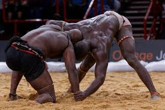

Football
Le football est l'une de mes plus grandes passions. Je pratique ce sport depuis plusieurs années, et j'aime son esprit d'équipe, sa dynamique et l'adrénaline que l'on ressent sur le terrain. En plus de jouer, je prends plaisir à regarder les matchs et à suivre les championnats internationaux. J'ai aussi un intérêt particulier pour l'histoire du football et l'évolution des tactiques de jeu au fil des années. Participer à des tournois locaux et rencontrer des joueurs de différents horizons est une expérience enrichissante. Enfin, je trouve que le football est un excellent moyen de rester en forme et de développer des compétences telles que la discipline, le travail d'équipe et la résilience.

Lutte
La lutte sénégalaise, aussi appelée "Laamb", est l'un des sports les plus populaires et traditionnels du Sénégal. Elle combine des éléments de lutte traditionnelle et de boxe, rendant chaque combat spectaculaire et dynamique. Ce sport est profondément ancré dans la culture sénégalaise et est souvent associé à des cérémonies et des rites spirituels. Les lutteurs, connus sous le nom de "lambistes", sont souvent considérés comme des héros locaux et bénéficient d'un statut quasi mythique. Les compétitions de lutte attirent des foules énormes et sont accompagnées de chants, de danses et de percussions. Chaque lutteur participe à des rituels avant le combat, comme le port de gris-gris et la réalisation de danses mystiques pour invoquer la protection et la force. La lutte sénégalaise est plus qu'un simple sport; c'est une célébration de la force, de la culture et de l'identité nationale. Les tournois majeurs, tels que ceux organisés à l'Arène Nationale de Dakar, sont diffusés à la télévision et suivis avec passion par des millions de Sénégalais.

Basketball
Le basket est un sport que j'adore pour son côté rapide et dynamique. Que ce soit en compétition ou pour le plaisir, j'apprécie particulièrement le jeu d'équipe et l'esprit de camaraderie qui se développe sur le terrain. En plus de jouer, j'aime regarder les matchs de la NBA et suivre les performances de mes équipes préférées. Participer à des tournois de basket locaux est toujours excitant et me permet de rencontrer de nouveaux amis. J'apprécie également l'aspect stratégique du jeu, où chaque mouvement et chaque passe comptent. Enfin, le basket m'aide à rester en forme et à améliorer ma coordination, mon agilité et ma concentration.